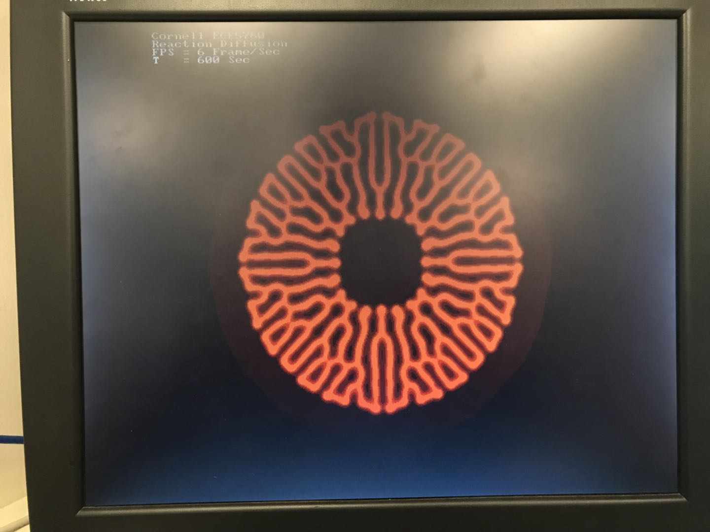

Simulation of Reaction Diffusion
Delin Cao
Introduction
This idea of project was originally from internal combustion engine. How the chemicals react and how they diffuse are very interesting questions. Basically, when chemicals react, substances transformed to each other. And diffusion causes the chemicals to spread out in certain rules. The goal of this project is designing and implementing a real-time chemical reaction solution on VGA screen based on Altera DE1-SOC. Reaction-diffusion system of Alan Turing and cellular automata model of Belousov-Zhabotinsky Reaction were chosen and implemented.
Mathematical Considerations
Reaction-Diffusion System
For this system, a finite solution of partial differential equation was implemented as figure below.

Credit to karlsims.com
This model works with two-dimensional grid, or Cartesian Coordinate System. In the reaction part, chemical A is fed to chemical B at given “feed” rate while chemical B is gradually removed at “kill” rate. As for the diffusion, it is simulated by two-dimensional Laplacian function. The Laplacian function is performed with a three by three convolution with certain weights of its neighbors.
Typical values were referenced from karlsims. These are: Da = 1.0, Db = 0.5, k=0.062, dt=1.0.The weights of Laplacian function are: center weight = -1, adjacent neighbors weight = 0.2 and diagonals weight = 0.05.
Belousov-Zhabotinsky Reaction
This model was first discovered by Belousov and then proved by Zhabotinsky. Basically it is a nonlinear chemical oscillator. The cellular automata of BZ reaction is a q-state life model. The model obeys the following rules:
1. There are three constants: k1,k2 and g. k1 and k2 represents the weights while g is th gain in the automata process
2. Three variables, a,b and s are derived from Moore's Neighborhood Law. Variable a is the number of infected cells in its neighbors. Variable b is the number of ill cells. Variable s is the sum of all cell states with in the neighbors including cell state itself.
3. When state=0, the cell is in healthy state. The next state of the cell is defined with a/k1 + b/k2.
4. When state=q, the cell is in ill state. The next state will be 0.
5. When in other state, the cell is in infected state. The next state will be s/(a+b+1)+g
6. All the calculations are rounded to integers.
Credit to hermetic.ch
Implementations
Matlab Simulation
The Matlab part was used to realize algorithms. Because of rich environments of this platform, it is very convenient to try the ideas out first and then proceed to the next step. Also, the performance of Matlab code is a comparison to the implementation on the DE1-SOC.
For the Reaction-diffusion system, four matrices are initiated representing the amount of chemical A and chemical B in current state and next state. By following the finite solution of the system, the cells are updated one by one, or serially in each transverse. After the calculation, the next state is given to the current state for the next transverse.
As for the BZ reaction cellular automata, only two matrices are required. With the q-state life rules, the cells are automatically updated. Also, this process is serial.
HPS Solution
The HPS solution follows the same logic used in the Matlab implementation but in C language. The main optimization is dynamic memory allocation, or malloc. With malloc, the program can better utilize the memory to process the matrices faster. Also, with some carefully use of variable type, the processing time can be slightly reduced.
FPGA Solution
The implementation on FPGA is quite different from the previous work. Due to limited time, only BZ reaction cellular automata was implemented.
In the FPGA, the update of cells is parallelized. The parallelization utilized M10k blocks on the DE1-SOC to store the data in the two matrices mentioned above. Also, only one matrix is required for the implementation. In the design, the matrix is stored by column. Hence, every time the data is required, a whole row can be presented.
To realize the Moore’s Neighborhood Law, three rows are required. In the initial state, three rows of registers are loaded with boundary condition, row 0 and row 1. Let’s name these three register rows as a[0], a[1] and a[2] for clarity. After loading, the values of next state for row 0 are stored in another row of registers, reg_nxt. In the end, row 0 is presented to the VGA controller.
In the update state, when the VGA finishes displaying and requires the next row, row 1 is shifted to a[0] and row zero is shifted to a[1]. A new row from memory is read to a[2]. After the shifting, reg_nxt is written back to the memory.
With these two main steps, the parallelization scheme is structured with good memory usage. However, with 640x480 resolution, the scheme will run out of logic elements on the board. It is lucky that the 320x240 version fits tightly. The combinational logic requires some series optimize for a high-resolution version.
Unfortunatelly the parallelized solver only achieved Modelsim simulation. The VGA controller I implentmented is still buggy and couldn't display correctly.
You can download the code from here
Results and Discussion
The performance difference is as follows:
Matlab Reaction Diffusion: 1 FPS
Matlab BZ Reaction CA : 1 FPS
HPS Reaction Diffusion : 5-6 FPS
HPS BZ Reaction : 6-8 FPS
HPS BZ Reaction low res : 11-13FPS
Screenshots of HPS solutions:
Reaction Diffusion: Disk in Center, 104 Seconds
Reaction Diffusion: Disk in Center, 322 Seconds
Reaction Diffusion: Disk in Center, 600 Seconds
BZ Reaction: Random, 320x240
BZ Reaction: Random, 640x480
Video Demonstration
Appendix
The group approves this report for inclusion on the course website.
The group approves the video for inclusion on the course YouTube channel.
Reference
Contact
Huge thanks to Prof.Land for helping me realize the ideas of reaction diffusion.